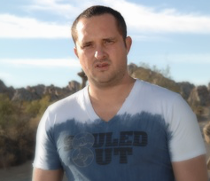

Ladar Levison

Ladar Levison founded Lavabit, a secure email service recommended by Edward Snowden.
In August 2013, he shut it down. His note to users read:
“I have been forced to make a difficult decision: to become complicit in crimes against the American people or walk away from nearly 10 years of hard work by shutting down Lavabit. After significant soul searching, I have decided to suspend operations. I wish that I could legally share with you the events that led to my decision. I cannot.”
When announcing PropPriv in May 2016, he said:
“The recently proposed Court Orders Act of 2016, mandating backdoors in commercial cryptography solutions, threatens the trustworthiness of commercial implementations, and leaves cybersecurity and personal freedom hanging in the balance.”
When not busy advocating for freedom, Ladar works on the Dark Mail project.
Chris Odom

Chris Odom is the creator of the Open-Transactions project, a financial cryptosystem, and the cofounder of startup Stash.
Chris is always on the lookout for open crypto projects that protect and advance the property rights of users. When announcing PropPriv, he said:
“Encryption is both a First and Fourth Amendment issue, and Blockchain technology has shown us direct links to property rights as well. It is therefore vital that the technology remains available to protect our unalienable rights, since it is clear we cannot rely on corporate interests to withstand political pressure when it comes to our freedoms.”
Cliff Baltzley

Cliff Baltzley is the founder of Hushmail and has been a serial entrepreneur in cryptographic software companies for over 20 years. He has been using digital currencies since the 1990s, and he believes in personal privacy for all users of the Internet.
When announcing PropPriv, he said:
“We felt it was time for a financially transparent non-profit organization to exist, to protect human and civil rights by helping support Cypherpunks writing free and open cryptographic systems.”
His current startup is Stash with Chris Odom.